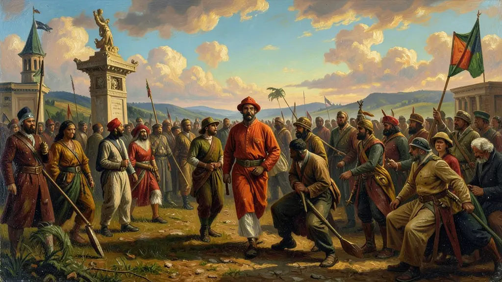
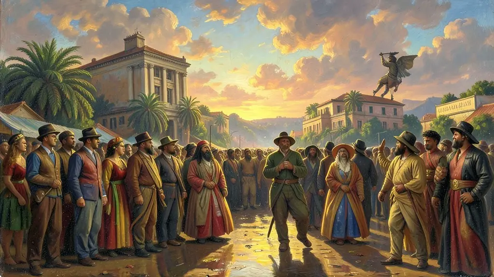
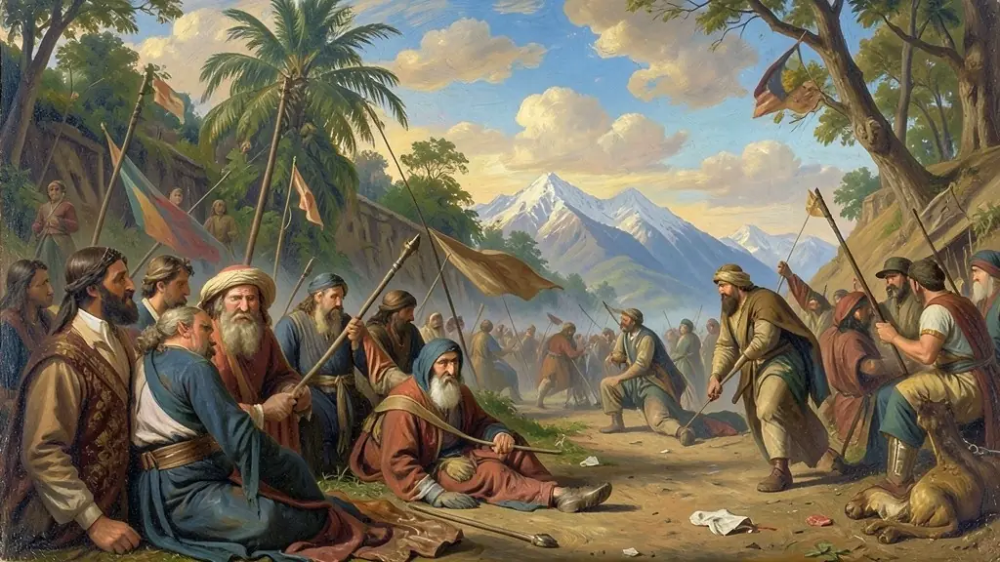

Capítulo 01
1. 1808: A Inversão Metropolitana
Quando D. João VI desembarcou no Brasil, a relação entre metrópole e colônia inverteu-se. O Rio tornou-se a capital do reino unido de Portugal, Brasil e Algarves (1815). A Abertura dos Portos acabou com o monopólio comercial, beneficiando imensamente a Inglaterra, que passou a inundar o mercado brasileiro com seus produtos industriais através dos Tratados de 1810.

Capítulo 02
2. 1817: A Revolução de Pernambuco
Pernambuco, que já fora o centro do açúcar, sentia-se abandonado e explorado. Inspirados no Iluminismo, padres, militares e maçons proclamaram uma república. Por 75 dias, o Brasil teve seu primeiro governo republicano de fato, com bandeira e leis próprias. A repressão de D. João VI foi brutal, com enforcamentos e perseguições, mas a semente do separatismo já estava plantada no Nordeste.

Capítulo 03
3. O Dia do Fico e a Pressão Portuguesa
D. João VI voltou para Portugal em 1821, deixando seu filho Pedro como regente. As cortes portuguesas começaram a enviar decretos que retiravam a autonomia do Brasil, tentando rebaixá-lo a simples colônia novamente. Em 9 de janeiro de 1822 (Dia do Fico), Pedro atende aos pedidos das elites brasileiras e decide permanecer, desafiando abertamente as ordens de Lisboa.

Capítulo 04
4. 7 de Setembro e a 'Paz' Sangrenta
O grito do Ipiranga foi a formalização de algo que já estava decidido. Entretanto, a independência não foi pacífica em todo o país. Províncias como Bahia, Maranhão, Piauí e Pará tinham tropas fiéis a Portugal. Foram batalhas sangrentas, como a do Jenipapo (Piauí) e o cerco de Salvador, onde o povo baiano (como Maria Quitéria e Joana Angélica) lutou para expulsar os portugueses definitivamente em 1823.
Capítulo 05
5. O Reconhecimento Internacional e a Dívida
Para ser um país, o Brasil precisava ser reconhecido pelas potências. Os EUA foram os primeiros (Doutrina Monroe). Portugal só aceitou em 1825 após o Brasil pagar 2 milhões de libras esterlinas (dinheiro emprestado pela Inglaterra). Assim, o Brasil nasceu politicamente livre, mas financeiramente dependente dos bancos britânicos, herança que duraria o século inteiro.
A independência do Brasil em 1822 foi um processo marcado pela continuidade e pela conservação das estruturas sociais, distinguindo-se radicalmente das repúblicas que nasceram na América Espanhola. A vinda da família real em 1808 já havia transformado o Brasil na 'sede do império', invertendo a lógica colonial. Assim, o Sete de Setembro foi menos uma ruptura revolucionária e mais um rearranjo político entre a elite agrária brasileira e o príncipe regente D. Pedro, visando manter a unidade territorial e, principalmente, o regime escravista.
O papel da Inglaterra foi fundamental na legitimação do novo Estado brasileiro. Através de empréstimos vultosos e tratados comerciais desiguais, o Brasil conquistou o reconhecimento internacional em troca de sua dependência econômica. A Constituição de 1824, outorgada por D. Pedro I após o fechamento da Assembleia Constituinte, instituiu o Poder Moderador, garantindo ao Imperador autoridade absoluta acima dos demais poderes e consolidando um modelo de Estado centralista e conservador que duraria todo o século XIX.
Para o Enem, é essencial compreender que a independência não trouxe 'cidadania' para a maioria da população. Os povos indígenas, os escravizados e as massas pobres continuaram excluídos do projeto de nação. A unidade territorial, muitas vezes exaltada como um sucesso, foi mantida através do uso da força contra movimentos separatistas e republicanos, como a Confederação do Equador. A independência foi, portanto, um 'arranjo por cima' que preservou o latifúndio e a escravidão, marcas que definiriam as contradições do Primeiro e Segundo Reinados.
Fonte: COSTA, Emília Viotti da. Da Monarquia à República: Momentos Decisivos. São Paulo: UNESP, 2010.
Atividades interativas
Questões para fixar
A vinda da Família Real para o Brasil em 1808 trouxe a 'Abertura dos Portos às Nações Amigas'. Qual foi o principal efeito econômico dessa medida?
Diferente da Independência dos EUA, a do Brasil manteve o regime monárquico. O principal motivo para essa escolha das elites foi: